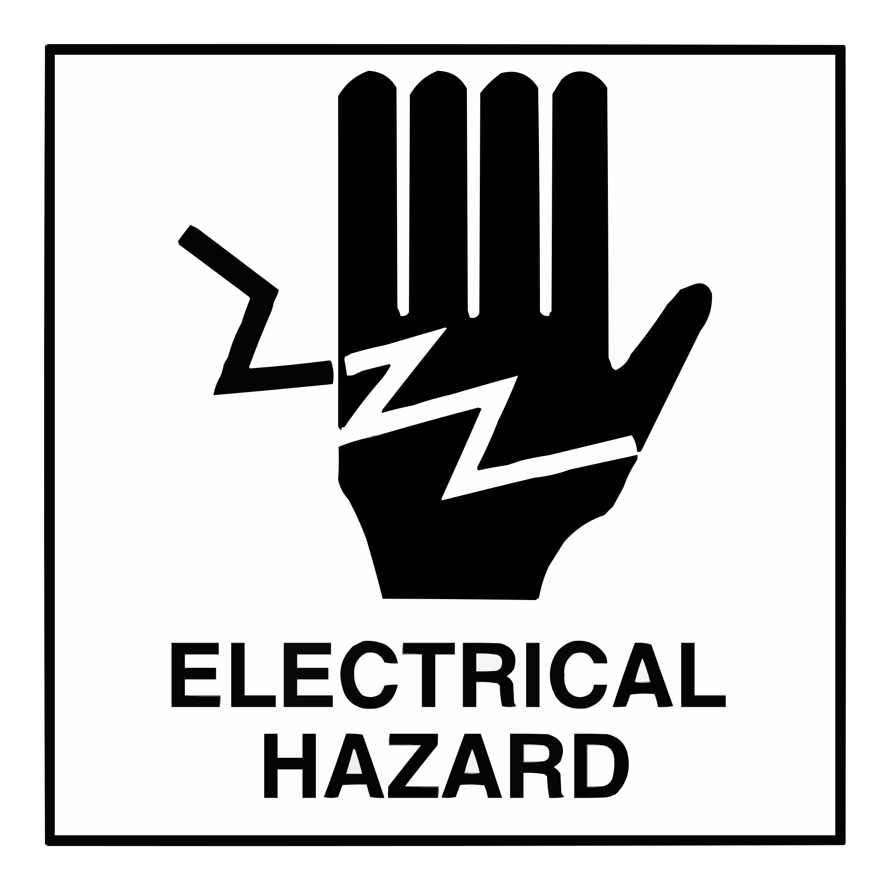
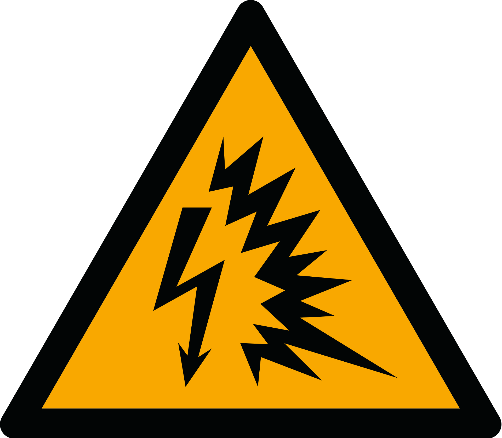
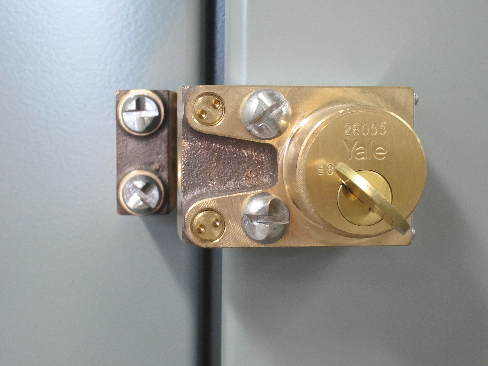

🛡️ Seguridad eléctrica: NFPA 70E y LOTO en campo
Complemento de las secciones de seguridad de las guías de PIMVCA. Este resumen cubre los conceptos prácticos de la NFPA 70E (Seguridad Eléctrica en el Lugar de Trabajo) aplicados a radiobases, subestaciones y tableros.

1. Los cinco principios de oro
- Trate toda instalación como energizada hasta que demuestre lo contrario.
- Defina el área de trabajo antes de tocar algo.
- Evalúe riesgo de arco y choque con un análisis documentado.
- Retire la energía y bloquee/etiquete (LOTO) antes de intervenir.
- Verifique la ausencia de tensión con equipo probado antes y después de usarlo.
2. Peligros: corriente, arco y energía almacenada
- Choque eléctrico: 1 mA se percibe · 10 mA no se puede soltar el conductor · 100 mA puede causar fibrilación ventricular (ritmo inexistente = paro).
- Arco eléctrico: la falla produce hasta 20.000 °C (4× la superficie del Sol), onda de presión y metal fundido. El riesgo se mide en cal/cm².
- Energía almacenada: baterías de -48 V (cortocircuito de miles de amperios), capacitores de UPS, presión diésel del generador, gas refrigerante de climatización.
- Radiofrecuencia: zonas de exclusión en torres activas; use medidor de potencia antes de acercarse a antenas en servicio.

3. Categorías de arco eléctrico (energía incidente)
| Categoría | Energía incidente (cal/cm²) | EPP mínimo típico |
|---|---|---|
| Cat 0 | < 1,2 | Cara y ojos (gafas), ropa de algodón normal |
| Cat 1 | ≥ 4 | Cara + ojos, guantes de cuero, camisa y pantalón de algodón |
| Cat 2 | ≥ 8 | Conjunto de arco (cara completa, casco, chamarra + pantalón), guantes |
| Cat 3 | ≥ 25 | Conjunto de arco completo de mayor categoría, bota dieléctrica |
| Cat 4 | ≥ 40 | Conjunto completo de Cat 4 + capucha + protección respiratoria según caso |
Los valores reales salen del cálculo de arco (método IEEE 1584 / NFPA 70E). Si no hay cálculo, aplique el análisis conservador del procedimiento aprobado de la empresa.
4. LOTO: bloqueo y etiquetado (6 pasos)

- Preparar: identifique fuentes (red, planta, UPS, baterías, derivaciones) y el procedimiento aprobado.
- Notificar: avise a afectados que la energía se desconectará; obtenga el permiso de trabajo.
- Desconectar: corte todas las fuentes — incluidas secundarias de CT/PT, auxiliares y aislamiento de baterías.
- Bloquear y etiquetar: candado personal de cada técnico + etiqueta con nombre, fecha y motivo.
- Disipar: descargue capacitores, relie el sistema (puesta a tierra temporal si aplica) y espere los tiempos del equipo.
- Verificar: compruebe ausencia de tensión con probador probado antes y después en una fuente conocida.
5. EPP y verificación de ausencia de tensión
- EPP básico: gafas con protección lateral, casco (torre/tablero), ropa sin partes metálicas expuestas, calzado aislante.
- Guantes clase 00 / 0 / 1 / 2 según tensión; siempre con forro de cuero por encima.
- Prueba de ausencia de tensión (3 pasos): ① pruebe el probador en una fuente viva conocida; ② verifique el punto sin tensión; ③ vuelva a probar el probador. Siempre — un probador muerto se parece a un sistema seguro.
- Herramientas aisladas y vivoscopio para derivaciones; nunca use el cuerpo como tierra.
6. Riesgos específicos en radiobases
| Riesgo | Control recomendado |
|---|---|
| Altura (torre, góndola) | ARN completo, doble anclaje, zona de caída libre, herramienta amarrada |
| Radiofrecuencia (RRU antenas) | Medir potencia con medidor/calibrador; respetar límites de exposición (ZBE); RF OFF autorizado |
| Baterías -48 V | Sin anillos y relojes, herramienta aislada, cinta sobre bornes, precaución de H₂ (ventilación) |
| Climatización | Presión de refrigerante, bloqueo del compresor, no abrir circuitos sin evacuar |
| Generador diésel | Bloqueo mecánico, temperatura alta y combustible: zona caliente, gases de escape |
7. Emergencias
⚠ Regla de vida: si encuentra a una persona en contacto con tensión, NO la toque: corte la fuente o sepárela con material aislado. Luego llame al 171/168 y atienda — quemaduras: cubrir con apósito limpio (no hielo ni pasta dental), no reventar ampollas.
8. Checklist previo al trabajo (permiso)
- Permiso de trabajo firmado y análisis de riesgo (arco + choque) revisado.
- EPP de la categoría correcta, inspeccionado (guantes sin roturas, probados por fecha).
- Plan de reversión y respaldos de configuración listos.
- Fuentes identificadas; LOTO aplicado y verificado; probador probado antes/después.
- Primeros auxilios y ruta de acceso conocidos; acompañante y comunicación activa.
- Fotos antes/después y evidencias en el ticket.
9. Enlaces para seguir
- OSHA — Seguridad eléctrica (inglés)
- NFPA — NFPA 70E (referencia oficial)
- Guía de Infraestructura Crítica — PARTE 1.7
10. Créditos de imágenes
| Imagen | Autor | Licencia |
|---|---|---|
| peligro_electrico.png | Bigguy637 — Wikimedia Commons | CC0 |
| peligro_arco.png (ISO 7010 W042) | Autor del símbolo — Wikimedia Commons | CC0 |
| loto_tablero.jpg | Wtshymanski — Wikimedia Commons | CC BY-SA 4.0 |
| guantes_aislantes.jpg | Thomei08 — Wikimedia Commons | Dominio público |